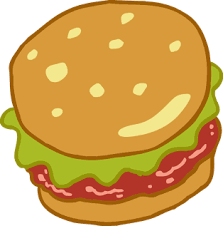

Krabby Patty

Ingredients
- A teaspoon of raspberry
- Seaweed Sauce
- Chopped Love
- Dried Kelp
- Squid Ink
- Sea Pickles
- Sea Cheese
- Tomatoes
- Ketchup
- Mustard
- Chum
Procedure
- Heat bottom bun and upper bun, apply Mayonneaise on both buns , add two slices of tomatoe.
- Make the mixture for the krabby patty and add the main secret ingrediet wait two minutes.
- Remember to prepare the ingredients with a lot of love as it is an essential.
- Cook the patty with lots of love.Also have patience.
- Apply mustard and add two rings of onion.
- After following the steps cautiously you finished!!
- Enjoy!!
Previous Main Page Next